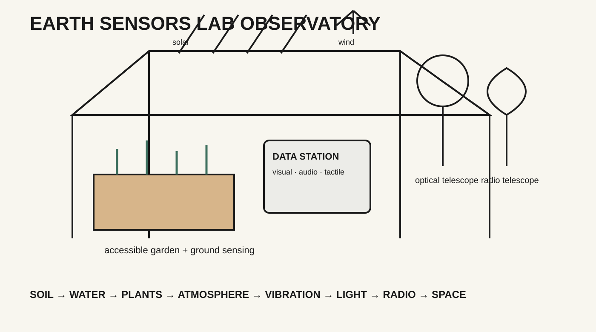
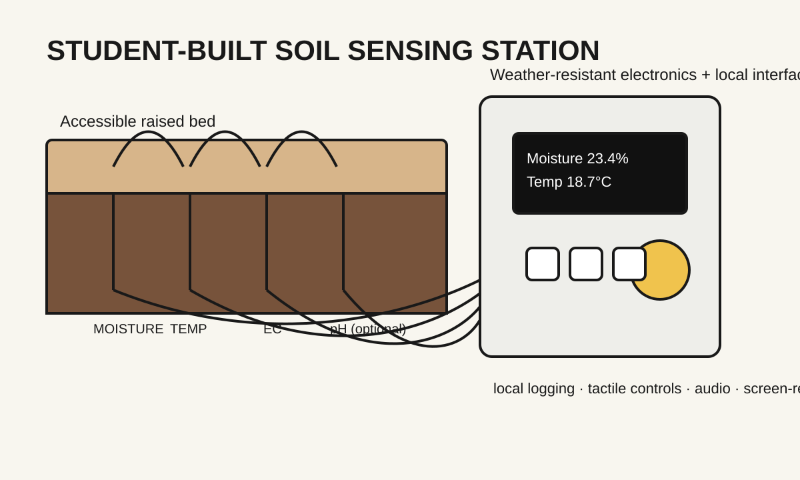
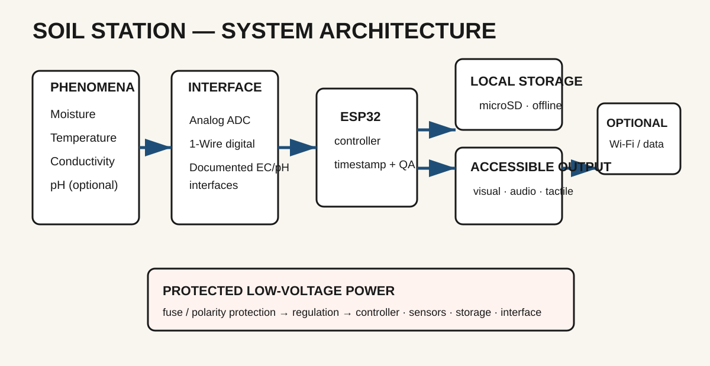
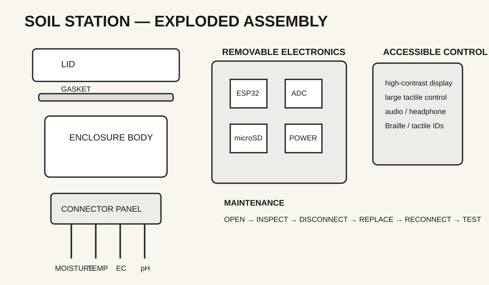
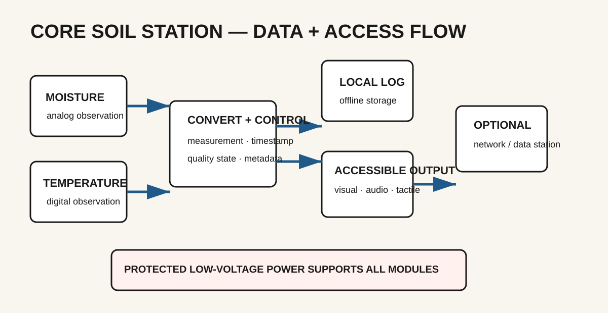
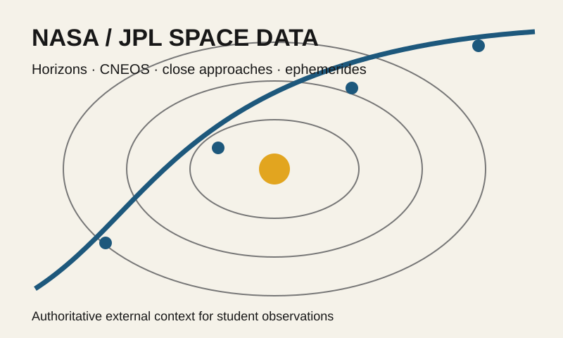
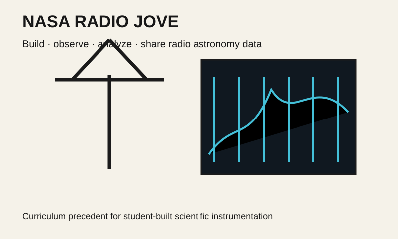
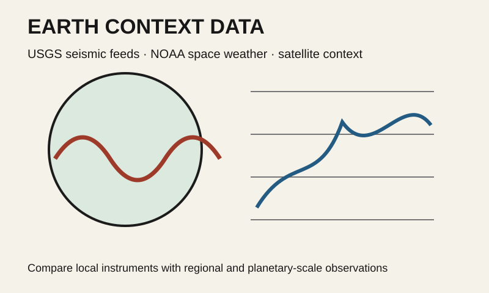

Build to learn
QUESTION → DESIGN → BUILD → CALIBRATE → DEPLOY → OBSERVE → RECORD → INTERROGATE → REPRESENT → SHARE → REDESIGN.
An accessible Earth-to-space observatory where students build instruments, pull authoritative public data, compare signals, interrogate evidence, and share what they learn.
Mixed-ability student cohorts build instruments that observe soil, water, living systems, atmosphere, vibration, sound, light, electromagnetic phenomena and the sky. They also work with external scientific data—from earthquakes and space weather to satellite observations and small-body ephemerides—so local measurements can be understood in context.

QUESTION → DESIGN → BUILD → CALIBRATE → DEPLOY → OBSERVE → RECORD → INTERROGATE → REPRESENT → SHARE → REDESIGN.
Garden-scale instruments sit beside regional, planetary and astronomical datasets. Students learn what can be compared, what cannot, and why provenance and uncertainty matter.
Each instrument dossier includes a curriculum, scientific questions, parts/BOM, schematic, build sequence, calibration, data model, uncertainty rules, accessible representations, installation behavior, public workshop material and Schema Card.

Soil, water, plants, biodiversity, vibration and acoustic sensing.
Weather, air quality, light/UV, microclimate, solar/wind generation and storage.
Radio environment, magnetometry, spectroscopy and space-weather context.
Optical observing, radio astronomy, near-Earth objects and interstellar visitors.



External data is treated as another instrument family. ESL retrieves, versions and normalizes scientific feeds, then compares them with local observations. JPL explicitly restricts browser embedding of some SSD/CNEOS APIs, so ESL uses a fetch → validate → cache → publish pattern instead of fragile client-side requests.
LOCAL INSTRUMENTS EXTERNAL SOURCES
soil · vibration · weather NASA/JPL · NOAA · USGS · satellites
\ /
\ /
---- NORMALIZATION + PROVENANCE ----
|
OMOLUABI RULES
|
accessible visual · text · audio · tactile outputEvery instrument curriculum gets a companion section for relevant external datasets, units, update cadence, field mapping, provenance, failure modes, comparison questions and accessibility.
ESL distinguishes instrument faults, data-feed failures, environmental anomalies and candidate scientific events. Correlation never becomes causation automatically.
These are external references and precedents, not claims of endorsement or formal partnership. Links open in a new tab.

Horizons, close approaches, observability, fireballs and small-body orbital data.
Open JPL SSD/CNEOS APIs
A direct curriculum precedent: build instrumentation, make radio observations, analyze and share data.
Open Radio JOVE
Earthquake GeoJSON, seismic-event metadata, K-index, solar radio flux and geospace feeds.
USGS Earthquake APINASA identifies 3I/ATLAS as the third known interstellar object. Its hyperbolic path and the recovery of pre-discovery observations from archives make it a strong lesson in open data, trajectory reconstruction and uncertainty.
Apophis will safely pass Earth on April 13, 2029, about 32,000 km above the surface. ESL can use the known date to build a multi-year baseline, observation campaign and public installation around a real planetary-science event.
The same observation should support numerical/text, visual, sonic, spoken, tactile or haptic representations where appropriate. APIs and interactive visualizations need structured text equivalents, keyboard access and explicit provenance—not only graphs.